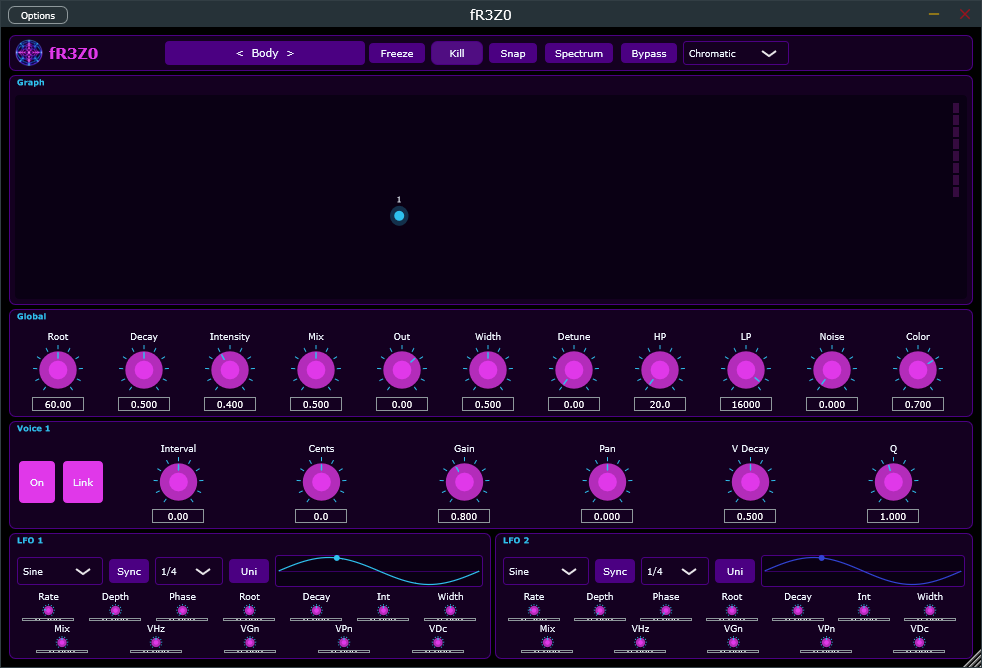

ƒR3Z0
A resonator you can actually tweak. Eight bandpass voices, decay, intensity, mix, and a graph that writes the same parameters as the knobs.
Globals cover root, width, noise, freeze, kill, and two LFOs with destination amounts. MIDI notes set the root. Pitch bend is ±2 semitones.
The graph is not a hidden macro. Every control is its own host-automatable parameter.
